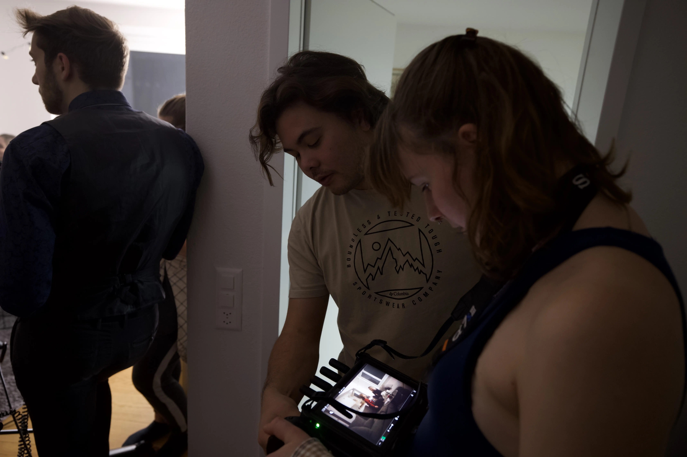
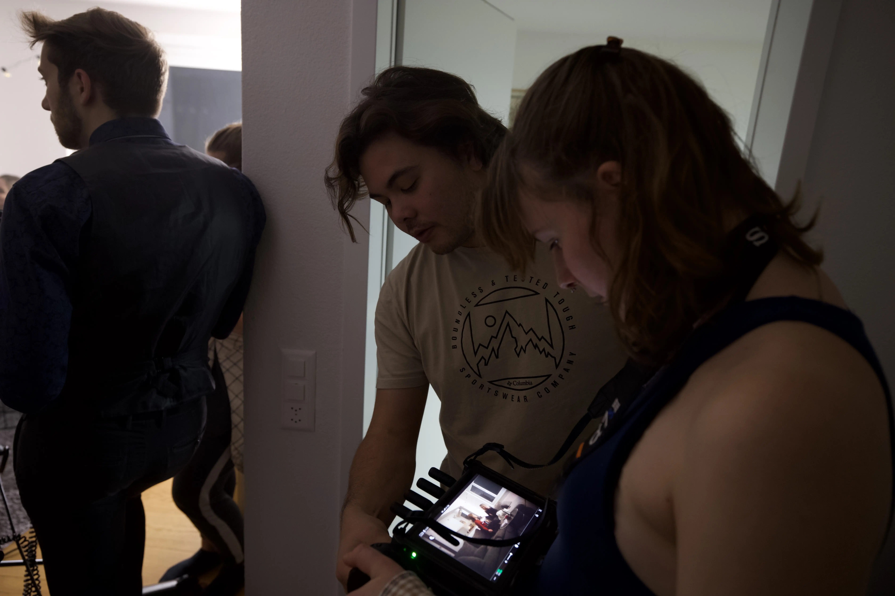
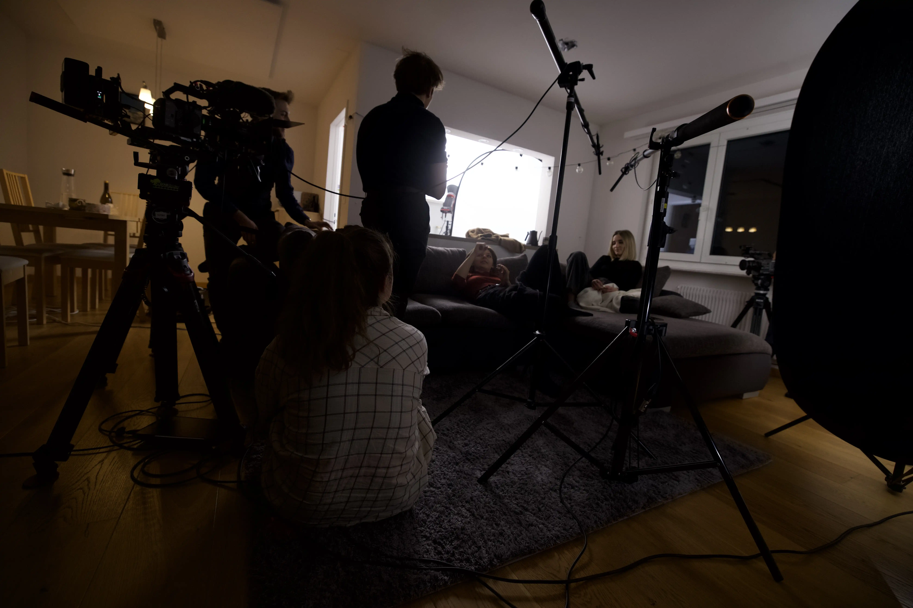
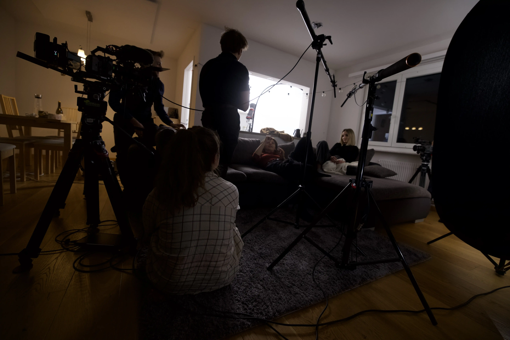

Der Kurzfilm
In Farbe
Umsetzung
Pre-Production
Idee:
"Ein Stück Leben" ist ein Kurzfilm, der die Komplexität menschlicher Emotionen und Beziehungen
beleuchtet. Lisha bekommt Besuch von ihrer energiegeladenen Freundin Amelie, die wie abgemacht mit Lisha
ausgehen möchte. Allerdings möchte Lisha lieber einen gemütlichen Filmabend zu Hause machen, da Sie
innerlich erschöpft und müde ist.
Der Film stellt die beiden Freundinnen in den Mittelpunkt: Lisha, die sich nach Ruhe sehnt und mit
innerer Müdigkeit kämpft, und Amelie, die Lebensfreude und Aktivität verkörpert.
Die Begegnung findet in Lishas Zuhause statt. Während Amelie Lisha überreden will, die Wohnung zu
verlassen um gemeinsam Feiern zu gehen, spiegelt sich in Lishas Widerstand ihr Bedürfnis nach
Verständnis und Anerkennung ihrer Gefühle wider. "Ein Stück Leben" zeigt auf, wie Freundschaften durch
gegensätzliche Bedürfnisse und Erwartungen auf die Probe gestellt werden, und unterstreicht die
Bedeutung von Empathie und Respekt für die individuellen Grenzen des anderen.
Das ganze Projekt enstand spontan und mit wenig Vorlaufzeit und in nur mit zwei Produktionstagen. Aus diesem Grund entschieden wir uns nicht mit einem fixen Dialog zu arbeiten. Wir haben ein Skript, welches den Schauspieler:innen einen fixen Themenrahmen vorgab, allerdings waren sie frei zu Improvisieren und ihre eigenen Ideen einzubringen.
Planung:
Wir starteten mit Brainstorming Sessions, um ein Thema für unser Kurzfilm zu generieren. Dafür
verwendeten wir die Brainwriting Methode. Wir einigten uns auf die Überthemen Empathie und
Freundschaft.
Ausserdem entschieden wir uns keine männlichen Protagonisten zu casten, da wir einen Kurzfilm produzieren wollten, der den Bachtel-Test besteht.
Wir verteilten die Aufgaben und jeder machte sich individuell an die Arbeit.
In diesem kurzen Zeitraum war das Casting und Locationscouting eine grössere Hersausforderung. Ursprünglich war der Kurzfilm in einer Bar angedacht, doch so kurzfristig erhielten wir keine zusage zu einem passenden externen Drehdrehort. Nach vielen Absagen konnten wir über mehere Ecken zwei Schauspielstudent:innen der HKB gewinnen.
Produktion
1. Produktionstag:
Am ersten Tag ging es um das gegenseitige Kennenlernen, Dialogfindung und den groben Ablauf der Story zu
definieren. Parallel konnten wir bereits einige Kameraeinstellungen und die Lichtsetzung für den Drehtag
bestimmen. Die Stimmung war von Anfang an sehr positiv und gelassen. Das Team harmonierte auch mit den
beiden Schauspier:innen. Somit fühlten wir uns am Ende des Probetags bereit und waren guter Dinge, dass
der Drehtag einen Erfolg wird.
2. Produktionstag:
Die Crew traf sich frühmorgens um gemeinsam das Setup für die Szene aufzubauen. Da die Szene am Abend
spielte, dunktelten wir die Fenster komplett mit Molton ab. Die Kamera und der Ton konnten wir
problemlos aufstellen, jedoch stellte sich das Lichtsetup als sehr schwierig heraus. Bis wir den
gewünsten Look erzielten, ging es mehrere Stunden. Um das Kamerabild noch etwas weicher zu gestalten,
verwendeten wir zusätzlich eine Nebelmaschine. Insgesamt machten wir 6 verschiedene Kamera- und
Lichteinstellungen, die in 40 Takes resultierte.


 



 



Post-Produktion
1. Schnitt:
Unsere grösste Herausforderung war, "Kill your darlings". Es gab viele tolle Momente, aber nur
ein kleiner Teil hat es in die endgültige Story geschafft. Es war sehr interessant zu sehen, wie gut
alles zusammenpasste, obwohl es improvisiert war. Die ganze Szene wurde aus vielen verschiedenen Takes
zusammengeschnitten, damit Rhythmus und Story stimmig waren.
Color Grading:
Beim Color Grading sind wir etwa sechsmal drübergegangen, bis wir das Ergebnis hatten, das
wir wollten. Da die Wände alle weiss waren, war die Farbseparation für uns nicht einfach, ohne dass es
unnatürlich wirkte. Die Schwarz-Weiss-Version war in dieser Hinsicht einfacher für uns. Dort bestand
unsere Herausforderung darin, die richtige Balance zwischen Schärfe und Weichheit zu finden. Wir haben
sicherlich etwa eine Stunde an der Kontrastkurve gearbeitet.
Sound Design:
Da das Richtmikrofon nicht immer optimal bei den Schauspielerinnen und Schauspielern platziert
werden konnte, hatten wir viel Hall im Raum auf den Aufnahmen. Zusätzlich war jedes Rascheln auf dem
Sofa hörbar. Das Herausfiltern mit Izotope RX war für uns nicht einfach und war bis zum Schluss nicht
perfekt. Da es zwei verschiedene Mikrofone waren, mussten wir viel mit Equalizern (EQs) arbeiten, damit
sie gleich klingen, und es ist uns bis zum Ende nicht gelungen, dass sie exakt gleich klingen.
Bachtel-Test
Was ist der Bachtel-Test?
Der Bechdel-Test ist ein Mass für die Darstellung von Frauen in Filmen und anderen Formen der Fiktion. Um ihn zu bestehen, müssen in dem Werk mindestens zwei Frauen vorkommen, die miteinander über etwas anderes als einen Mann sprechen. Einige Varianten des Bechdel-Tests verlangen, dass die beiden Frauen namentlich genannt werden.
Woher kommt der Bachtel-Test
Der Bechdel-Test tauchte erstmals 1985 in einem Strip von "Dykes to Watch Out For" auf, einem langjährigen Comic der Cartoonistin und Autorin Alison Bechdel ("Fun Home"). Der Comic zeigt zwei lesbische Frauen, die über Filme diskutieren; eine von ihnen sagt, dass sie sich einen Film nur dann ansehen wird, wenn er bestimmte Anforderungen erfüllt, die weibliche Figuren betreffen. Bechdel hat gesagt, dass ihre Freundin Liz Wallace die Idee dazu hatte, die auch von den Schriften Virginia Woolfs inspiriert wurde. (Aus diesem Grund nennt die Autorin ihn auch lieber Bechdel-Wallace-Test).
Obwohl Bechdel den Test als "kleinen lesbischen Witz in einer alternativen feministischen Zeitung" bezeichnete, wurde er erst Jahrzehnte später als Barometer für die Darstellung der Geschlechter in den Medien in die kritische Diskussion aufgenommen. Der Test kann nicht nur auf Filme, sondern auch auf Videospiele, Fernsehsendungen, Theaterstücke und Literatur angewendet werden.
Regeln
Laut dem Original-Comic lauten die drei Regeln:
- In dem Film müssen mindestens zwei Frauen vorkommen.
- Die Frauen müssen miteinander reden.
- Ihr Gespräch muss sich um etwas anderes als einen Mann drehen.
Kritiker haben den Bechdel-Test dahingehend überarbeitet und aktualisiert, dass die weiblichen Charaktere namentlich genannt werden, mehr als fünf Worte zueinander sagen und mehr als eine Minute Bildschirmzeit haben sollten. Dennoch werden die drei ursprünglichen Regeln weiterhin häufig verwendet, um die Darstellung der Geschlechter zu testen.